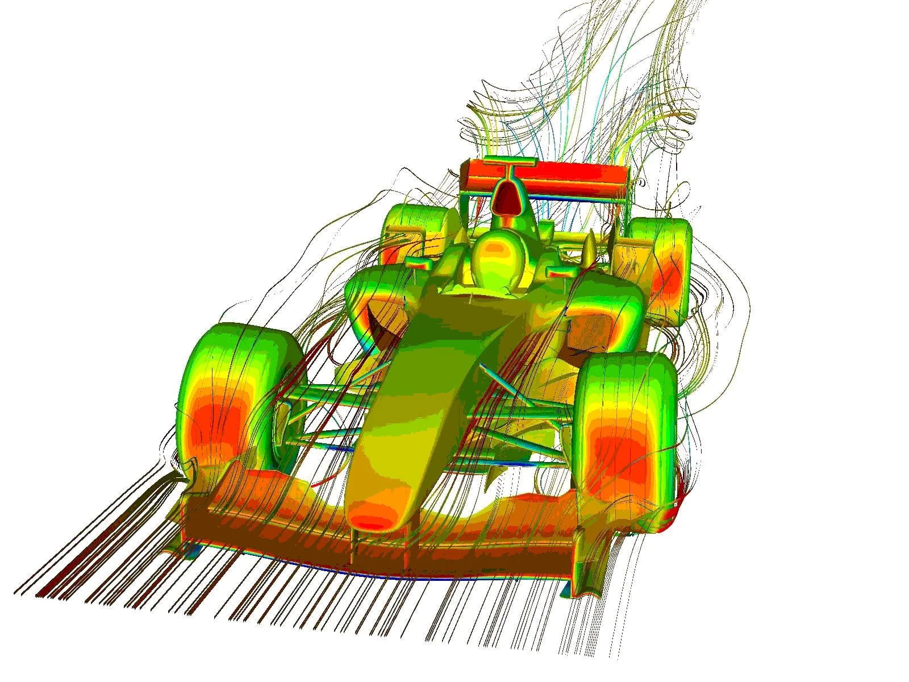
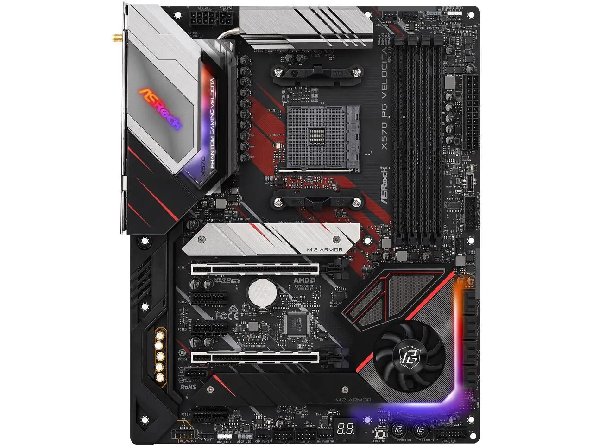
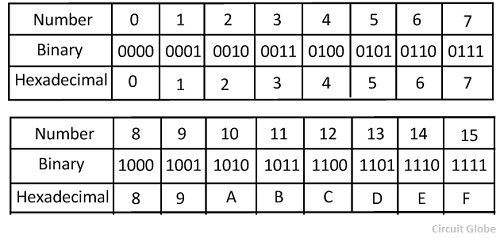

Introduction to Computational Physics
Dr. Alex Chen
Department of Physics
Washington University in St. Louis
Fall 2024
Course Information
What is Computational Physics?
Using computers to solve physics problems that are often too complex or intractable using analytic methods

Not only useful in physics, but the methods apply to many branches of engineering, as well as finance, AI, and game development.
Computer Architecture
A modern motherboard
Architecture of a CPU
_(annotated).png)
CPU Clock
- The CPU clock is the number of computation cycles the CPU can perform per second per core. Current generation CPUs can typically achieve 3-4 GHz clock speed.
- Modern CPUs can do fused multiply and add (FMA) as a single operation. They can also carry out the same operation to several operands in a single cycle (SIMD, AVX, AVX2...).
- Performance is often measured in FLOPS (Floating point operations per second). A personal computer can typically achieve several 10s of GFLOPS. Current fastest supercomputer, Frontier, can achieve more than an ExaFLOPS.
Computer Memory
Modern computers use random access memory (RAM)

Cache Lives on the CPU Die
Data Storage
For long-term storage, data is stored in non-volatile media
Hard Drives

Solid-state Drives (SSDs)
Hierarchy of Memory
Memory access is faster for memory that is closer to the CPU

Computers Talk in Binary

Representing Binary Using Hexadecimal Numbers
Assembly Program
A simple function that return the square of the input
int square(int num) {
return num * num;
}
square(int):
0f af ff
imul edi,edi
89 f8
mov eax,edi
c3
ret
Compilers translate high-level languages to assembly
Programming Languages
We will use C++ as the primary programming language in this course
double quadratic_formula(double a,
double b,
double c) {
double discriminant =
sqrt(b * b - 4 * a * c);
return (-b + discriminant) / (2 * a);
}
C++
def quadratic_formula(a, b, c):
discriminant = math.sqrt(b * b - 4 * a * c)
return (-b + discriminant) / (2 * a)
Python
C++ vs Python
C++
- Compiled language
Python
- Interpreted language
C++ vs Python
C++
g++ -o code code.cpp
./code
Python
python code.py
C++ vs Python
C++
- Compiled language
- Statically typed
Python
- Interpreted language
- Dynamically typed
C++ vs Python
C++
double a = 1.0;
double b = 2.0;
double c = a * b;
a, b, and c are of type double and
can no longer be changed to a different type.
Python
a = 1.0
b = 2.0
c = a * b
a, b, and c are implicitly
deduced to be of floating point type, but can be assigned to a
different type.
C++ vs Python
C++
- Compiled language
- Statically typed
- Explicit memory management
Python
- Interpreted language
- Dynamically typed
- Garbage collected
C++ vs Python
C++
double* v = new double[10000];
delete[] v;
Python
v = np.zeros(10000)
C++ vs Python
C++
- Compiled language
- Statically typed
- Explicit memory management
- Useful when high performance is required
Python
- Interpreted language
- Dynamically typed
- Garbage collected
- Good for rapid prototyping
Why C++?
- C++ is widely used in scientific computing, as well as in the industry wherever performance is critical
- Over the past several decades, C++ has evolved to become a modern and expressive language. Many large-scale projects are written in C++
- We will restrict ourselves to a subset of C++ that is more manageable, and will make extensive use of "modern C++"
- In particular, we will not be using the infamous
C-style pointers. Instead we will use references and
std::vector
Floating Point Numbers
Real numbers are represented using floating point numbers, which is very similar to the scientific notation
However, both the fractional part and the integrand are represented in binary!
Floating Point Numbers

Floating Point Numbers
Decimal real numbers may not have an exact representation in binary
Code
double a = (1.0 - 0.1) - 0.9;
double b = (1.0 - 0.05 - 0.05) - 0.9;
std::cout << a << std::endl;
std::cout << b << std::endl;
Output
0
-1.11022e-16
Due to rounding error, $(a + b) + c$ may not be exactly the same as $a + (b + c)$.
Floating Point Numbers
Floating point numbers have a "machine precision", which is defined to be the maximum relative rounding error during floating point calculations:
Minimum $\epsilon$ such that $1.0 + \epsilon \neq 1.0$
It is unrealistic to expect a floating point calculation to be more accurate than this machine precision
Floating Point Numbers
Do not directly compare whether two floating points are equal. Instead test whether the absolute value of their difference is within some tolerance limit
Do NOT
double a = 1.345;
double b = 1.123;
double c = a + b;
if (c == 2.468) { ... }
Do
double a = 1.345;
double b = 1.123;
double c = a + b;
double EPSILON = 1e-10;
if (std::abs(c - 2.468) < EPSILON) {
...
}
Floating Point Numbers
float: single precision numbers, 32 bits, 4 bytes
double: double precision numbers, 64 bits, 8 bytes
long double: quadruple precision numbers, 128 bits, 16 bytes
C++ standard does not provide a 16-bit half precision type, but custom 16-bit floating point numbers are now quite popular with machine learning
Floating Point Numbers
- If you just write "
1.0", it is interpreted as adoublein C++. - If you write
1, it is interpreted as an integer. Operations between two integers give an integer result. Therefore1/2will yield0. - Write numbers with a decimal point to avoid potential bugs!